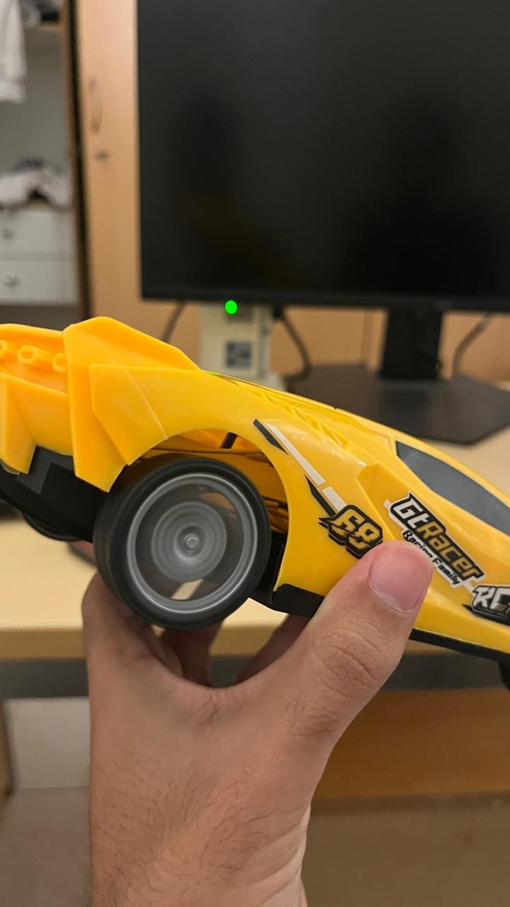
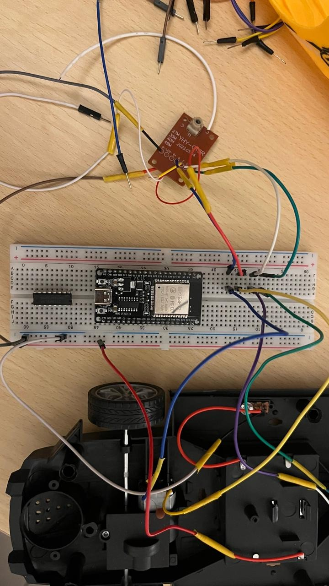
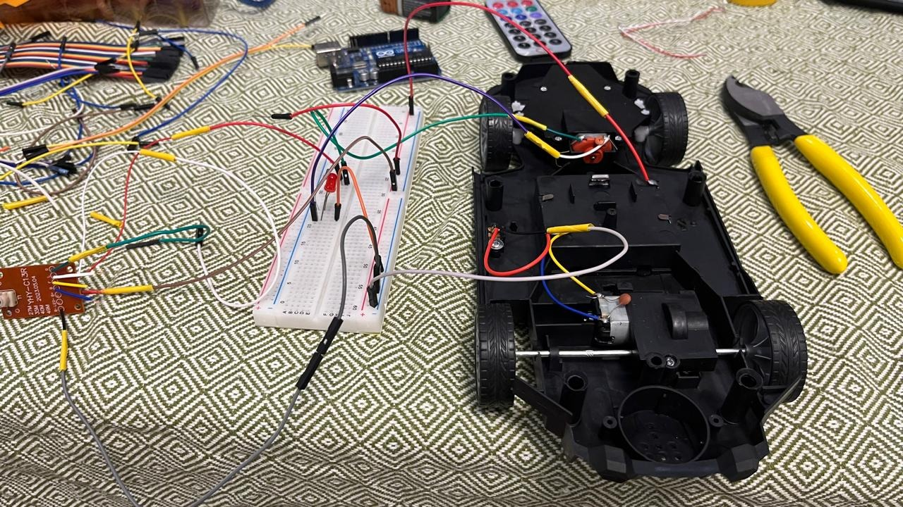

Watch one mission
simulation, about 22 minSeed {SEED}: the standard-mission run closest to the 20-seed average, not the best case. Same links and driver for both. Bands: blue usable, red not. Usable = the camera the manoeuvre needs arrives under 0.5 s old, fast and sharp enough to drive by. Our send-on-every-link controller has no second-by-second trace in this export, so the replay shows v1.
Open the full mission viewerBest on a laptop. Two consoles side by side, every link and camera, seven scenarios and the results behind them. It replays our v1 (predictive switching) against the baseline.
The challenge
EDGE Group"How might we keep a user's experience unbroken as they move between Wi-Fi, mobile, satellite and wired networks?"
Our user
A remote operator driving a tracked tactical UGV on a 3 km reconnaissance round trip beyond line of sight. They are only as safe as the picture on their screen: an unbroken experience means a live view they can drive by and a vehicle that obeys every command.
The mission
simulation3 km out, 22 minutes, three links that each fail somewhere.
Usable operator view per phase, outbound, standard mission, mean of 5 seeds.
Proposed solution
Perfect switching still leaves 45 interruptions. Sending on every link leaves 41, with no prediction at all.
Today's multi-link routers watch each link and switch when it fails. We first built a smarter switch with a failure predictor, then tested its ceiling with an oracle that knows the future: even perfect switching barely helps, because most outages leave nowhere better to switch to.
So we stopped betting on the switch. Our controller sends what matters on every alive link, and gives the bandwidth to the camera the manoeuvre needs.
View interruptions per 22-minute mission, lower is better. Mean of 5 seeds, same simulated links for every controller. Oracle: reads the future, not deployable.
The result
standard mission, simulationOurs against threshold failover with fixed priorities, 5 seeds. Across three scenarios, usable view was higher in 15 of 15 paired runs and interruptions lower in 14 of 15; one harsh-handover seed was worse.
Every controller drove the same simulated links on the same seeds, so the gap between them is fair. The links themselves are our assumptions (only 4G was measured), the route is one route, and 5 seeds is a small sample. A real THeMIS would not see these exact percentages. We would rather tell you that than have you find it.
Technical explanation
Every 0.1 s the controller reads only what a real vehicle can measure: delay, loss and capacity on each link.
Mission-aware allocation. It infers the manoeuvre (drive, reverse, precision, stop) from operator commands. The camera that manoeuvre needs gets its minimum resolution and frame rate first; uploads go urgent-first when stopped, video-first when driving.
Two-stream FEC. Each frame is encoded twice. The small base stream travels whole on every alive link; the full stream is Reed-Solomon coded so any one link can drop.
Command copies. Every command goes out on both links; the vehicle obeys the freshest copy and derates to 70 % throttle when one link is left.
Solution features
- No switching gap. A link can vanish mid-frame and the operator never notices.
- Priced to the mission. Base-layer copy costs about 9 % extra data; two-stream FEC about 26 %.
- Emission-control ready. Redundancy level is a policy setting. Under emission control, transmit a base-quality stream on one link only.
- Fails safe. Holds the last command for a speed-dependent budget, then stops.
- Same code, simulation to vehicle. The deciders tested in simulation are the modules that run on the vehicle.
Built on existing mechanisms: 3GPP ATSSS multi-access steering (our baseline); multiple description and erasure coding across paths (two-stream FEC); XLINK multi-path QUIC for video, SIGCOMM 2021.
From model to metal
a working rover


Measured on the real hardware
Single smoke tests on 9 October 2026, not yet repeated: read them as "it works", not as a result.
Where reality differed, and what we changed
- 4G latency. Measured round trip 260 ms against a 300 ms threshold: 11 flaps per run. Threshold to 500 ms: 2.5 switches.
- Command delivery. Public brokers batched or dropped 20 Hz. Own TLS broker, 10 Hz: 199 of 199 delivered.
- Power. Battery sags to 2.3 V with both motors on. Radio lines read against live battery voltage.
Future improvements
We start from what our results don't show yet. Each limit is the next experiment.
- Tuned on one route.Next: run an unseen route with no retuning.
- Link models are assumptions; only 4G was measured and corrected.Next: a field range walk for radio and satellite, including outages that hit two links at once.
- Jamming defeats redundancy: with no good link, usable view stays at 24 %.Next: pair with anti-jam radios or communication-aware route planning.
- The rover carries commands only; video FEC runs in simulation.Next: second encode and Reed-Solomon parity on the rover's computer.
Team Edge Detectors
- Hamad AlOmran AlshamsiUniversity of Pennsylvania · King's College London
- Mohammed Omran AlOwaisAmerican University of Sharjah
- Mahmoud DarwishAmerican University of Sharjah
- Zayed Hamad AlMazroueiUniversity of Sharjah
Method. Seeded discrete-event simulation, 5 seeds per scenario, identical link conditions for every controller. Link models and operator requirements are stated assumptions; only the 4G link was measured. THeMIS is named as the class of vehicle we model; this work is not affiliated with EDGE Group or Milrem Robotics.
Advanced Technology Pioneers 2026, NSTI Festival, ADNEC Al Ain. Find us at booth 24.